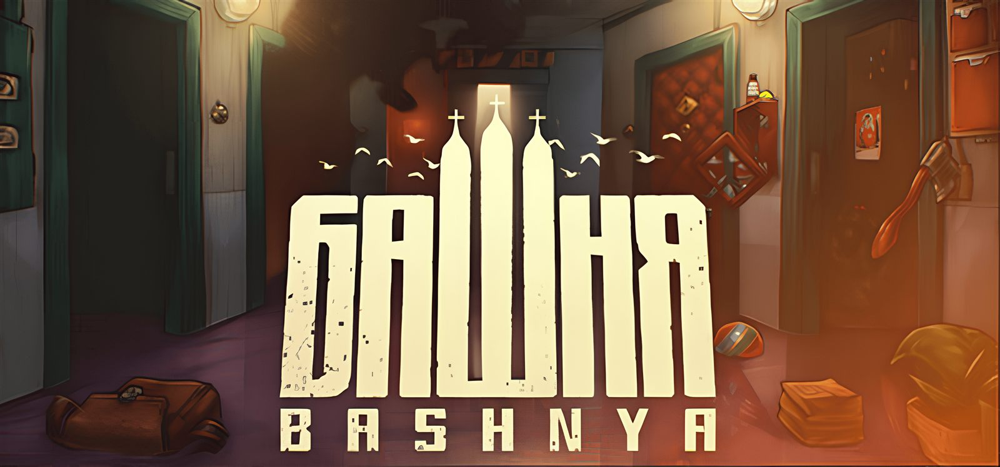
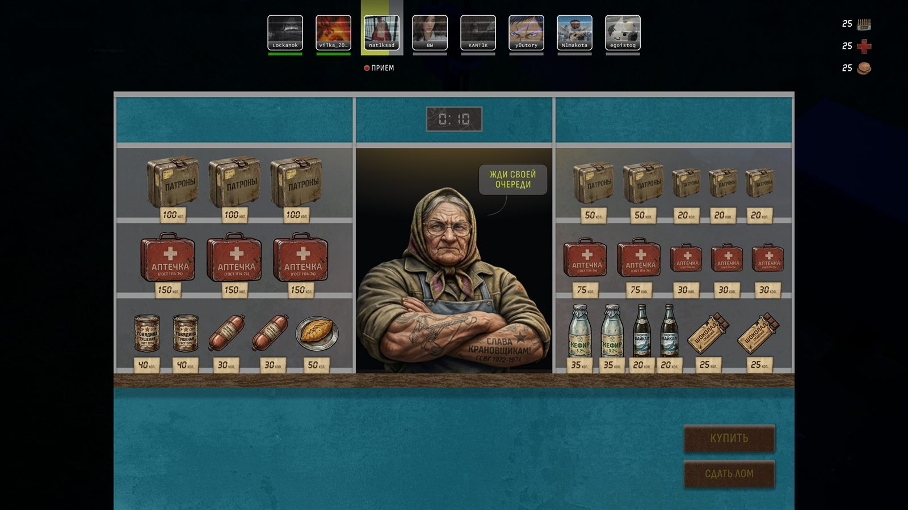
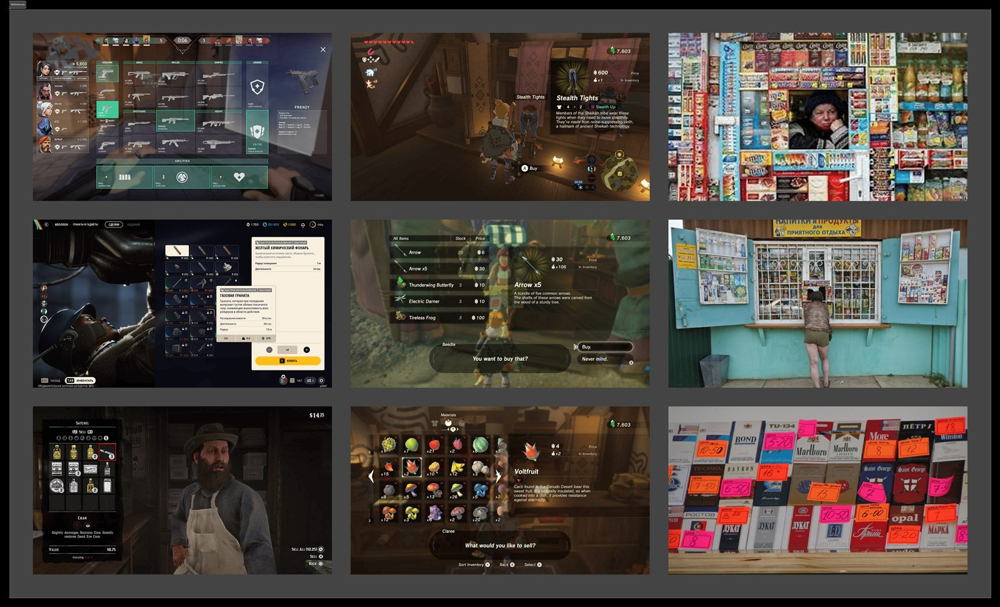
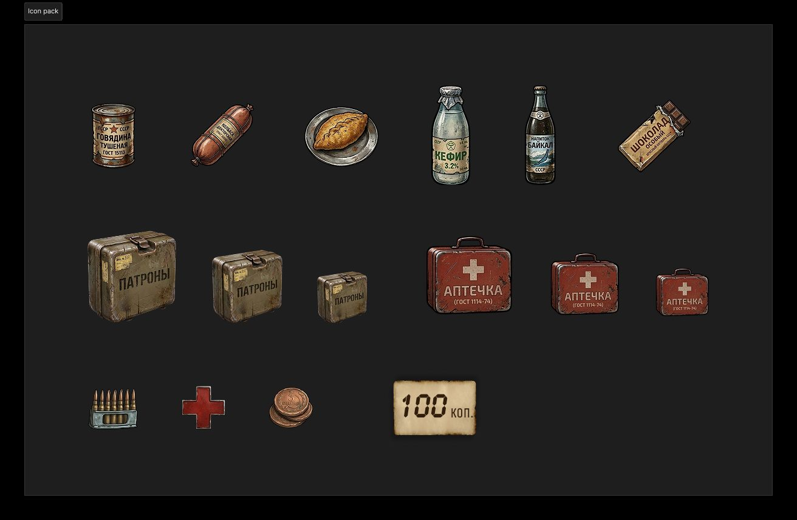
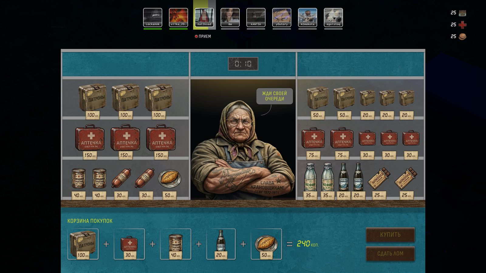
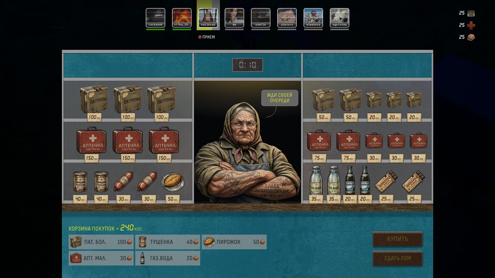
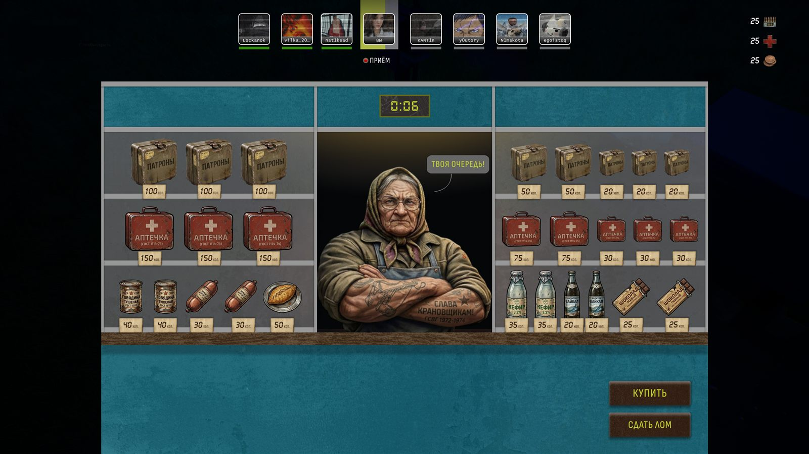
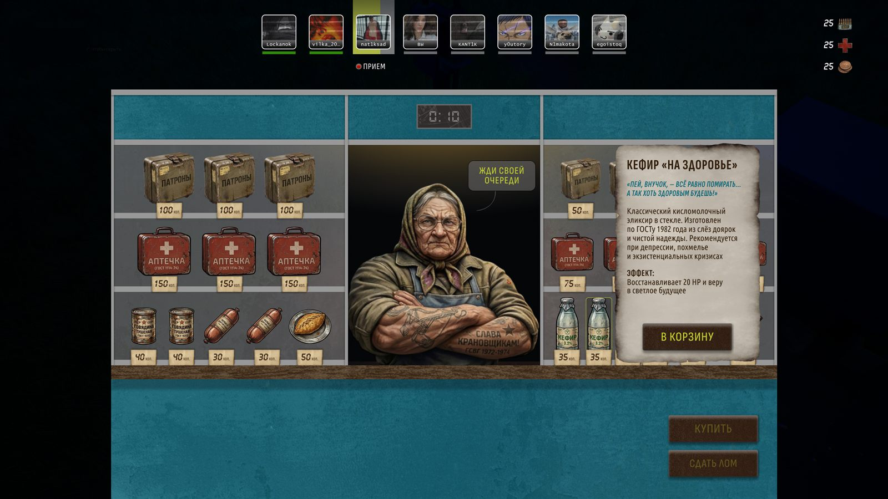
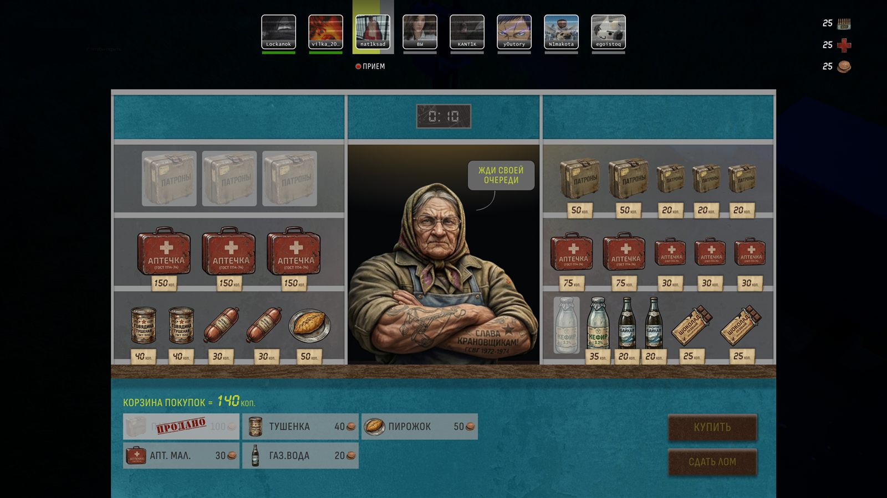

Bashnya — интерфейс игрового киоскаBashnya — game kiosk interface
Тестовое задание · Game UI/UX · desktop, 2560×1440 · 8–10 часов, солоTest task · Game UI/UX · desktop, 2560×1440 · 8–10 hours, solo
S — SituationS — Situation
Тестовое задание для игровой студии: спроектировать интерфейс киоска для multiplayer roguelike в сеттинге альтернативных 90-х, где СССР не распался.
Между уровнями игроки попадают к киоску, сдают найденный металлолом и покупают аптечки, патроны и еду. Покупка идёт через живую очередь: каждому игроку даётся 10 секунд, а ассортимент общий и ограниченный. Пока игрок ждёт, он может изучать товары и заранее собирать корзину.
Главный UX-риск — совместить атмосферный игровой экран с большим количеством данных: очередь, таймер, витрина, цены, корзина, HUD и действия игрока.
A test task for a game studio: design a kiosk interface for a multiplayer roguelike set in an alternate 90s where the USSR never fell.
Between levels, players visit the kiosk to trade scrap metal and buy medkits, ammo and food. Purchases run through a live queue: each player gets 10 seconds, stock is shared and limited. While waiting, players can browse goods and pre-build their cart.
The main UX risk — fitting an atmospheric game screen with dense data: queue, timer, showcase, prices, cart, HUD and player actions.

T — TaskT — Task
Нужно было создать основной экран киоска и показать ключевые состояния взаимодействия.
Интерфейс должен был:
- показывать очередь и оставшееся время хода
- позволять собирать корзину во время ожидания
- активировать «Купить» и «Сдать лом» только в очередь игрока
- объяснять эффект, цену и тип товара
- корректно обрабатывать ситуацию, когда другой игрок уже купил товар из корзины
- сохранять читаемость поверх игрового окружения и поддерживать эстетику sovietpunk
Что на выходе: витрина с ассортиментом, очередь игроков, таймер, HUD, карточка товара, корзина, состояния «Твоя очередь» и «Продано», два варианта корзины.
Create the kiosk's main screen and show the key interaction states.
The interface had to:
- show the queue and remaining turn time
- let players build the cart while waiting
- enable “Buy” and “Sell scrap” only on the player's turn
- explain each item's effect, price and type
- handle the case where another player already bought an item from your cart
- stay readable over the game scene and keep the sovietpunk aesthetic
Deliverables: assortment showcase, player queue, timer, HUD, item card, cart, “Your turn” and “Sold” states, two cart variants.
A — ActionA — Action
1. Ресёрч и погружение в сеттинг1. Research and setting immersion
Перед проектированием исследовала внутриигровые магазины и собирала релевантные экраны в каталогах Interface In Game: изучала размещение ассортимента, карточки товаров, корзины и способы интеграции магазина в игровой мир.
Параллельно изучила визуальный язык позднего СССР и 90-х, референсы игр детства и музыку в близкой эстетике. Сделала ставку на материальность: старое дерево и металл, бумажные ценники, настоящую выкладку товаров и продавщицу с характером.
Вместо нейтрального оверлея интерфейс стал частью игрового мира — киоском, к которому игрок действительно подходит между матчами.
Before designing, I researched in-game shops and collected relevant screens from Interface In Game: assortment layouts, item cards, carts and ways to embed a shop into the game world.
In parallel I studied the visual language of the late USSR and the 90s, childhood game references and music in a close aesthetic. I bet on materiality: old wood and metal, paper price tags, real product display and a shopkeeper with character.
Instead of a neutral overlay, the interface became part of the game world — a kiosk the player genuinely walks up to between matches.

2. Иерархия товаров2. Item hierarchy
Разработала иконки для аптечек, боеприпасов и еды. Размер предмета на витрине показывает его тир: крупный объект считывается как более ценный без дополнительной подписи.
Отступила от ТЗ и убрала названия с ценников: уникальные силуэты уже различают товары, а на небольших бирках важнее оставить цену. Название, описание и эффект перенесла в карточку товара.
Designed icons for medkits, ammo and food. Item size on the showcase signals its tier: a large object reads as more valuable with no extra label.
I deviated from the brief and removed names from price tags: unique silhouettes already distinguish items, and on small tags price matters more. Name, description and effect moved into the item card.

3. Два сценария корзины3. Two cart scenarios
Подготовила два варианта под разные модели игровой экономики:
- Визуальный — крупные предметы складываются в выражение с итоговой стоимостью. Подходит для 2–4 покупок и лучше поддерживает погружение.
- Списочный — компактная сетка с иконкой, названием и ценой. Масштабируется для длинной корзины и массовых закупок на поздних этапах игры.
Так выбор UI можно привязать к реальному балансу игры, а не принимать только по визуальному вкусу.
Prepared two variants for different game-economy models:
- Visual — large items compose an expression with the total cost. Fits 2–4 purchases and supports immersion better.
- List — compact grid with icon, name and price. Scales for long carts and bulk late-game shopping.
This way the UI choice can follow the real game balance, not just visual taste.


4. Состояния и конкуренция за товар4. States and item contention
Проработала ожидание и активную очередь, карточку товара, добавление и удаление из корзины. Для общего ограниченного ассортимента предусмотрела состояние «Продано»: товар блокируется на витрине и помечается в корзине, если его успел купить другой игрок.
Designed waiting and active queue, item card, add/remove from cart. For the shared limited stock, added a “Sold” state: the item locks on the showcase and gets flagged in the cart if another player bought it first.



R — ResultR — Result
Подготовила готовый визуальный макет киоска: основной экран, два варианта корзины и состояния ключевых multiplayer-сценариев.
| Для игрока | Очередь и таймер видны постоянно; корзину можно собрать заранее, а активные действия доступны только в свой ход |
| Для геймдизайна | Два формата корзины позволяют выбрать решение под лимиты валюты и объём покупок |
| Для мира игры | UI не перекрывает сеттинг, а становится его частью через витрину, материалы, персонажа и ценники |
| Для разработки | Зафиксированы состояния ожидания, активного хода, карточки товара и уже проданного предмета |
| Метрики | Создала UI KIT, который помог ускорить создание фичей с 7 дней до 3 дней. Выстроила процессы по дизайну, сократив T2D с 5 дней до 2 дней |
Фидбек работодателя
Работодатель подтвердил ключевые решения кейса:
- отметил оригинальный визуальный стиль и историю, которая стоит за дизайном;
- отдельно выделил правильное понимание задачи и решение использовать две сетки — для витрины и корзины;
- подтвердил, что очередь получила верный визуальный приоритет и занимает достаточную часть экрана;
- положительно оценил сопроводительные комментарии — решения были не только показаны, но и аргументированы.
Delivered a finished visual kiosk mockup: main screen, two cart variants and states for the key multiplayer scenarios.
| For players | Queue and timer always visible; cart can be pre-built, active actions only on your turn |
| For game design | Two cart formats let the team pick per currency limits and purchase volume |
| For the game world | UI doesn't cover the setting — it becomes part of it via showcase, materials, character and price tags |
| For developers | Locked states: waiting, active turn, item card, sold item |
| Metrics | Built a UI kit that sped feature delivery from 7 days to 3 days. Streamlined design processes, cutting T2D from 5 days to 2 days |
Employer feedback
The employer confirmed the case's key decisions:
- praised the original visual style and the story behind the design;
- singled out the correct grasp of the task and the decision to use two grids — showcase and cart;
- confirmed the queue got the right visual priority and enough screen space;
- valued the accompanying rationale — decisions were not just shown but argued.